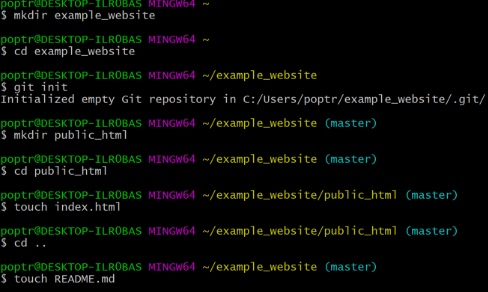
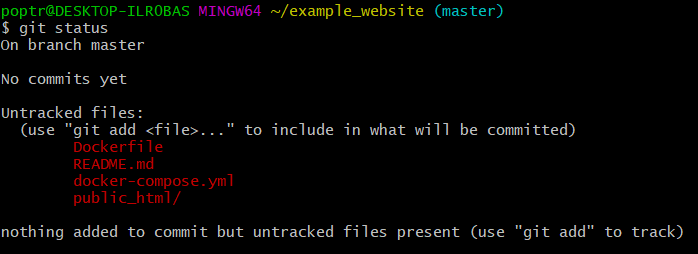
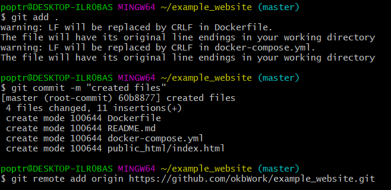

Intro to GIT
GIT is most widely used modern version control system in the world today.
Signing up for a new GitHub account
- create an account with username and password
- Follow the prompts to create your personal account or organization.
- Once you log in click new repository.
- In the upper-right corner of any page, use the drop-down menu, and select New repository.
- For the repo name, type a short title ( ex: IS218 or example_website).
- add a description of your repository. For example, "My first repository on GitHub." ( Optional)
- Choose a repository visibility.
- Select Initialize this repository with a README.
- Click create repository
- Open the Git Bash.
- Create a new directory with the same name as your github repository.
- Transfer to that repository.
- perform "git init" which will allow you to use git commands.
- create a README.md file, public_html folder to hold actual website files.
- For the sake of this tutorial, place an index.html file within the public_html. 
- Perform "git status" to see the changes you've made to the repository so far. 
- Perform "git add ." to prepare to add the files to the repository.
- Perform "git commit -m "message" " to commit your changes to the repository.
- Perform "git remote add origin **your repository link .git**" to connect to your online repository. 
- Perform "git push --set-upstream origin master" to establish where changes will be sent to in the repository and send in your changes.
- Future pushes will only need "git push" and if you want to push to a different branch, use "git push --set-upstream origin **your branch**".
- The Docker section will show you how to put your site on Docker, a platform for running apps in containers.
Visit Sign in to Github
Creating a brand new repository on GitHub
Creating a brand new repository in the Git Bash